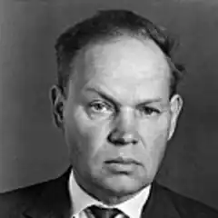
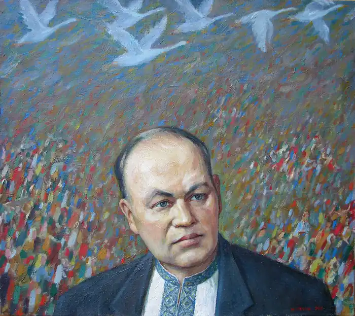
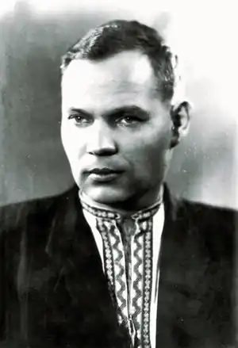

МИХАЙЛО СТЕЛЬМАХ
(1912 — 1983)
Михайло Панасович Стельмах народився 24 травня 1912р. у селі Дяківці Літинського району на Вінниччині в родині незаможного хлібороба. Перші його віршові спроби припадають на тридцяті роки, коли він по закінченні Вінницького педагогічного інституту (1933) вчителює спочатку на рідному Поділлі, а потім у школі села Літки на Київщині. Паралельно з роботою вчителя Стельмах працює і як збирач народнопісенних скарбів; пізніше (після Великої Вітчизняної війни) він деякий час вдосконалював професійні навики фольклориста на посаді наукового співробітника в Інституті фольклору та етнографії АН УРСР. Перша збірка поезій "Добрий ранок" виходить під редакцією А. Малишка 1941 року. Перебуваючи у лавах Радянської Армії, М. Стельмах зустрів Велику Вітчизняну війну. У 1941р. отримав важке поранення в голову і спину. Після тривалого лікування — знову на фронті. Списаний медкомісією зі служби в артилерійській частині, працює спеціальним кореспондентом газети "За честь Батьківщини" (Перший Український фронт). Залікувавши друге важке поранення (липень 1944р.), він повертається до лав захисників Вітчизни і закінчує війну на німецькій землі. Під час війни у Воронежі та Уфі вийшли під редакцією М. Рильського дві збірочки фронтових віршів Стельмаха "Провесінь" і "За ясні зорі" (1942), в 1943р. з'явилась надрукована в Уфі книжка оповідань "Березовий сік" під редакцією Ю. Яновського. 1943 роком датується початок роботи над вимріяним ще до війни великим прозовим твором. Праця над ним тривала вісім років; частини твору "На нашій землі" (1949) та "Великі перелоги" (1951) створили в цілокупності (після кількох "проміжних" редакцій окремих частин) об'ємний роман-хроніку під назвою "Велика рідня". Роман був удостоєний Державної премії Союзу РСР і започаткував серію епічних полотен: 1957р. — роман "Кров людська — не водиця", написаний до 40-річчя Великого Жовтня; 1959р. — роман "Хліб і сіль", який разом з обома попередніми епічними творами письменника був удостоєний Ленінської премії 1961р.; 1961р. — роман "Правда і кривда", несподіваний своєю публіцистичною "відкритістю"; 1969р. — роман "Дума про тебе". Останній роман — "Чотири броди" (1979, Державна премія УРСР ім. Т. Г. Шевченка 1980р.), як і "Велика рідня" і "Дума про тебе", об'єктом зображення має українське село 30-х років і часів Великої Вітчизняної війни. Цей роман, який справедливо вважають творчим заповітом видатного письменника, складно і довго йшов до читача. Це пояснюється тим, що в ньому автор порушив заборонені тоді теми — голоду 1933 року, сталінських репресій, атмосфери недовіри та донощицтва, що панували в ті роки, свавілля партійних керівників. Поетична творчість М. Стельмаха зменшується: після виходу збірок "Шляхи світання" (1953) та "Жито сили набирається" (1954) письменник обмежується упорядкуванням двох книг вибраного — "Поезії" (1958) і "Мак цвіте" (1968) — та виданням кількох книжечок для дітей. У 1957р. вийшла друком п'єса "Золота метелиця", яка поклала початок низці драматичних творів: "Кров людська — не водиця", 1958; "Правда і кривда", 1965; "Зачарований вітряк", 1966; "На Івана Купала (Дума про Морозенка)", 1966; "Кум королю", 1967; "Дума про любов", 1971. М Стельмах — знаний далеко за межами нашої країни романіст, поет, драматург, повістяр ("Над Черемошем", 1952; "Гуси-лебеді летять", 1964; "Щедрий вечір", 1967), вчений-фольклорист. Був удостоєний звання Героя Соціалістичної Праці (1972), депутат Верховної Ради СРСР ряду скликань, академік АН УРСР. Помер письменник 27 вересня 1983p.